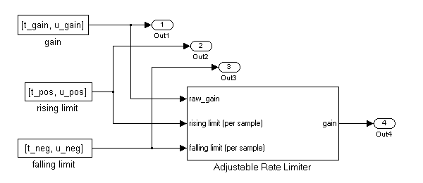
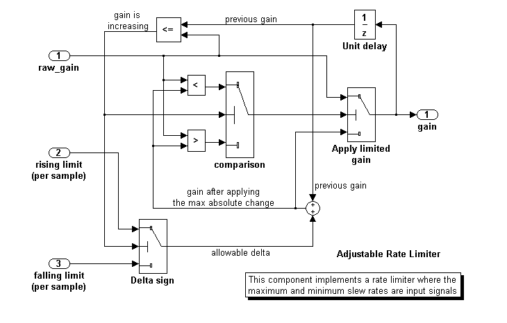
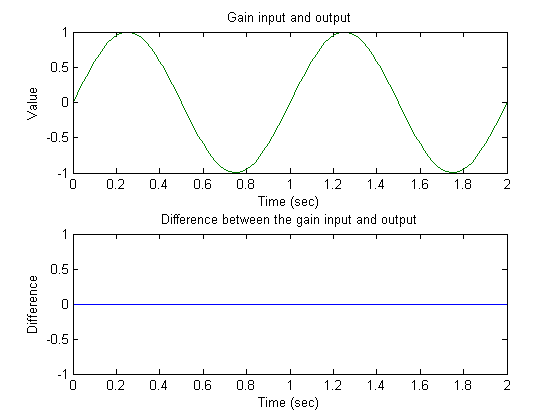
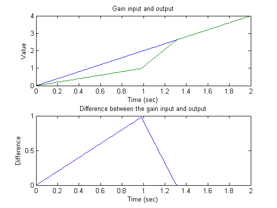
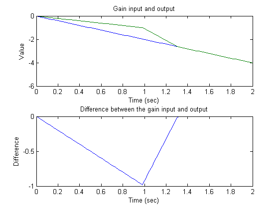

In this demonstration we will create three test cases for an adjustable rate limiter and analyze the resulting model coverage using the command line API of the Model Coverage Tool.
The Simulink subsystem Adjustable Rate Limiter is a rate limiter in the model 'ratelim_harness'. It uses three switch blocks to control when the output should be limited and the type of limit to apply.
Inputs are produced with the From Workspace blocks 'gain', 'rising limit', and 'falling limit', which generate piecewise linear signals. The values of the inputs are specified with six variables defined in the MATLAB workspace: t_gain, u_gain, t_pos, u_pos, t_neg, and u_neg.
open_system('ratelim_harness'); open_system('ratelim_harness/Adjustable Rate Limiter');
The first test case verifies that the output matches the input when the input values do not change rapidly. It uses a sine wave as the time varying signal and constants for rising and falling limits.
t_gain = (0:0.02:2.0)'; u_gain = sin(2*pi*t_gain);
Calculate the minimum and maximum change of the time varying input using the MATLAB diff function
max_change = max(diff(u_gain)) min_change = min(diff(u_gain))
max_change =
0.1253
min_change =
-0.1253
Because the signal changes are much less than 1 and much greater than -1, set the rate limits to 1 and -1. The variables are all stored in the MAT file 'within_lim.mat', which is loaded before simulation.
t_pos = [0;2]; u_pos = [1;1]; t_neg = [0;2]; u_neg = [-1;-1]; save('within_lim.mat','t_gain','u_gain','t_pos','u_pos','t_neg','u_neg');
The second test case complements the first case with a rising gain that exceeds the rate limit. After a second it increases the rate limit so that the gain changes are below that limit.
t_gain = [0;2]; u_gain = [0;4]; t_pos = [0;1;1;2]; u_pos = [1;1;5;5]*0.02; t_neg = [0;2]; u_neg = [0;0]; save('rising_gain.mat','t_gain','u_gain','t_pos','u_pos','t_neg','u_neg');
The third test case is a mirror image of the second, with the rising gain replaced by a falling gain.
t_gain = [0;2]; u_gain = [-0.02;-4.02]; t_pos = [0;2]; u_pos = [0;0]; t_neg = [0;1;1;2]; u_neg = [-1;-1;-5;-5]*0.02; save('falling_gain.mat','t_gain','u_gain','t_pos','u_pos','t_neg','u_neg');
The test cases are organized and executed using the cvtest and cvsim commands. These commands replace the sim command, which is normally used to programmatically execute Simulink simulations.
The cvtest command is used to register information about a test simulation. It takes the following three arguments:
- the full path to the root instrumentation subsystem (or just the model name to instrument the entire model)
- a label string used in reporting
- a setup command that is evaluated in the base workspace just prior to starting the simulation.
testObj1 = cvtest('ratelim_harness/Adjustable Rate Limiter', ... 'Gain within slew limits', ... 'load(''within_lim.mat'');')
testObj1 = ... cvtest
id: 524 (READ ONLY)
modelcov: 523 (READ ONLY)
rootPath: Adjustable Rate Limiter
label: Gain within slew limits
setupCmd: load('within_lim.mat');
settings: [1x1 struct]
The other test objects are similarly prepared:
testObj2 = cvtest('ratelim_harness/Adjustable Rate Limiter', ... 'Rising gain that temporarily exceeds slew limit', ... 'load(''rising_gain.mat'');') testObj3 = cvtest('ratelim_harness/Adjustable Rate Limiter', ... 'Falling gain that temporarily exceeds slew limit', ... 'load(''falling_gain.mat'');')
testObj2 = ... cvtest
id: 525 (READ ONLY)
modelcov: 523 (READ ONLY)
rootPath: Adjustable Rate Limiter
label: Rising gain that temporarily exceeds slew limit
setupCmd: load('rising_gain.mat');
settings: [1x1 struct]
testObj3 = ... cvtest
id: 526 (READ ONLY)
modelcov: 523 (READ ONLY)
rootPath: Adjustable Rate Limiter
label: Falling gain that temporarily exceeds slew limit
setupCmd: load('falling_gain.mat');
settings: [1x1 struct]
Execute coverage test object for the first test case using the cvsim command. This causes the model to begin simulation.
The cvsim command syntax is similar to that for the built-in sim command, except that the first input and first output arguments are cvtest and cvdata objects, respectively. Simulation results are retrieved using multiple return values.
[dataObj1,T,X,Y] = cvsim(testObj1,[0 2]); dataObj1
dataObj1 = ... cvdata
id: 524
type: TEST_DATA
test: cvtest object
rootID: 527
checksum: [4x1 struct]
startTime: 04-Sep-2003 18:19:06
stopTime: 04-Sep-2003 18:19:06
metrics: [1x1 struct]
Verify the first test case by checking that the output matches the input.
subplot(211),plot(T,Y(:,1),T,Y(:,4)),xlabel('Time (sec)'),ylabel('Value'), title('Gain input and output'); subplot(212),plot(T,Y(:,1)-Y(:,4)),xlabel('Time (sec)'),ylabel('Difference'), title('Difference between the gain input and output');
Execute and plot results for the second test case in the same way.
Notice that once the limited output has diverged from the input it can only recover at the maximum slew rate. This is why the plot has an unusual kink. Once the input and output match, the two change together.
[dataObj2,T,X,Y] = cvsim(testObj2,[0 2]); dataObj2 subplot(211),plot(T,Y(:,1),T,Y(:,4)),xlabel('Time (sec)'),ylabel('Value'), title('Gain input and output'); subplot(212),plot(T,Y(:,1)-Y(:,4)),xlabel('Time (sec)'),ylabel('Difference'), title('Difference between the gain input and output');
dataObj2 = ... cvdata
id: 525
type: TEST_DATA
test: cvtest object
rootID: 527
checksum: [4x1 struct]
startTime: 04-Sep-2003 18:19:11
stopTime: 04-Sep-2003 18:19:11
metrics: [1x1 struct]
Execute and plot results for the third test case.
[dataObj3,T,X,Y] = cvsim(testObj3,[0 2]); dataObj3 subplot(211), plot(T,Y(:,1),T,Y(:,4)), xlabel('Time (sec)'), ylabel('Value'), title('Gain input and output'); subplot(212), plot(T,Y(:,1)-Y(:,4)), xlabel('Time (sec)'), ylabel('Difference'), title('Difference between the gain input and output');
dataObj3 = ... cvdata
id: 526
type: TEST_DATA
test: cvtest object
rootID: 527
checksum: [4x1 struct]
startTime: 04-Sep-2003 18:19:13
stopTime: 04-Sep-2003 18:19:13
metrics: [1x1 struct]
Assuming that all the tests have passed, produce a combined report from all test cases to verify the achievement of 100% coverage. Coverage percentages for each test are displayed under the heading "Model Hierarchy." Although none of the tests individually achieved 100% coverage, in aggregate, they achieve complete coverage.
cvhtml('combined_ratelim',dataObj1,dataObj2,dataObj3);
Use the cvsave command to save the test setup and coverage results in the text file "ratelim_testdata.cvt" for later analysis.
cvsave('ratelim_testdata','ratelim_harness');
Close the model and exit the coverage environment
close_system('ratelim_harness',0);
clear dataObj*
clear testObj*
Use the cvload command to restore saved coverage tests from the file "ratelim_testdata.cvt" after opening the model. The data and tests are retrieved in a cell array.
open_system('ratelim_harness'); [SavedTests,SavedData] = cvload('ratelim_testdata')
SavedTests =
[1x1 cvtest] [1x1 cvtest] [1x1 cvtest]
SavedData =
[1x1 cvdata] [1x1 cvdata] [1x1 cvdata]
Use the overloaded operators, +, - % and * to manipulate cvdata objects. The * operator is used to find the intersection of two coverage data objects, which results in another cvdata object. For example, the following command produces an HTML report of the common coverage from all three tests.
common = SavedData{1} * SavedData{2} * SavedData{3}
cvhtml('intersection',common)
common = ... cvdata
id: 0
type: DERIVED_DATA
test: []
rootID: 651
checksum: [4x1 struct]
startTime: 04-Sep-2003 18:19:06
stopTime: 04-Sep-2003 18:19:13
metrics: [1x1 struct]
Sometimes coverage information is needed in raw undocumented form. Use the cvdata object to directly reference the raw numbers from a single test.
common.metrics.decision
ans =
1
1
1
0
35
0
0
0
0
0
0
0
0
The decisioninfo command retrieves coverage information from a block path or a block handle. The output is a vector with the achieved and total outcomes for a single model object.
cov = decisioninfo(SavedData{1} + SavedData{2} + SavedData{3}, ...
'ratelim_harness/Adjustable Rate Limiter')
%
% Use this retrieved coverage information to access its percentage coverage as
% follows:
%
percentCov = 100 * (cov(1)/cov(2))
cov =
6 6
percentCov =
100
When two output arguments are used, the decisioninfo command returns a structure that captures the decisions and outcomes within the Simulink block or Stateflow object.
[blockCov,desc] = decisioninfo(common, ... 'ratelim_harness/Adjustable Rate Limiter/Delta sign') desc.decision desc.decision.outcome(1) desc.decision.outcome(2)
Error using ==> _apply_dot Index exceeds matrix dimensions.